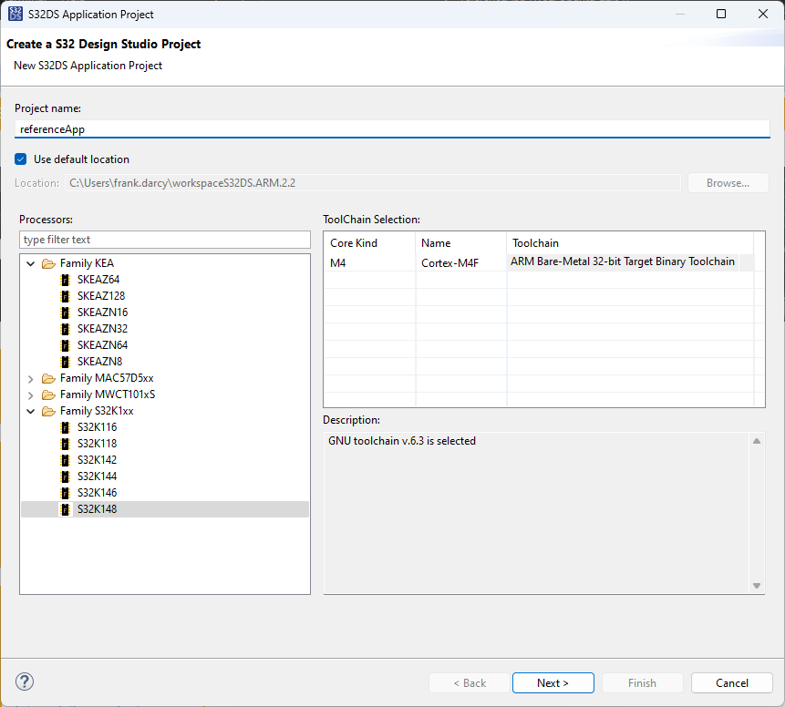
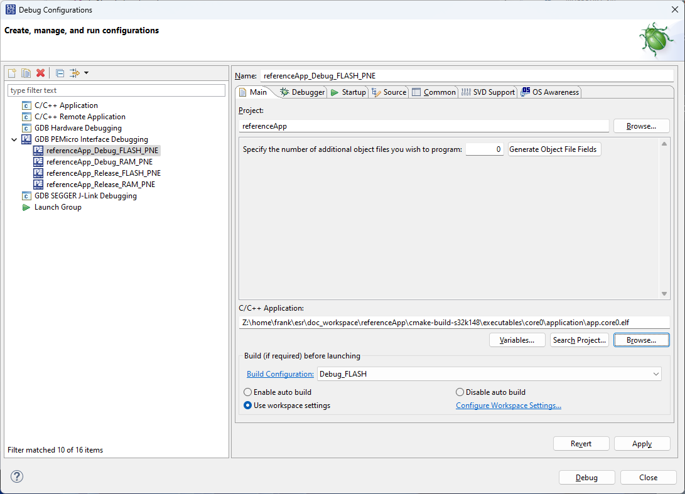
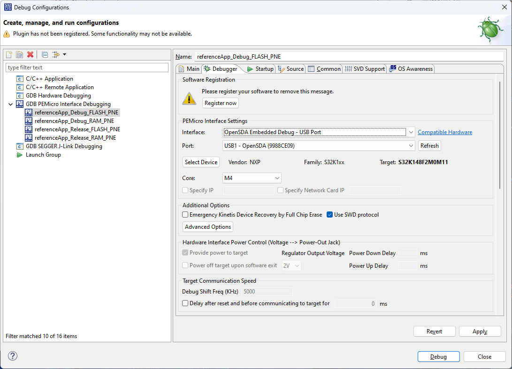
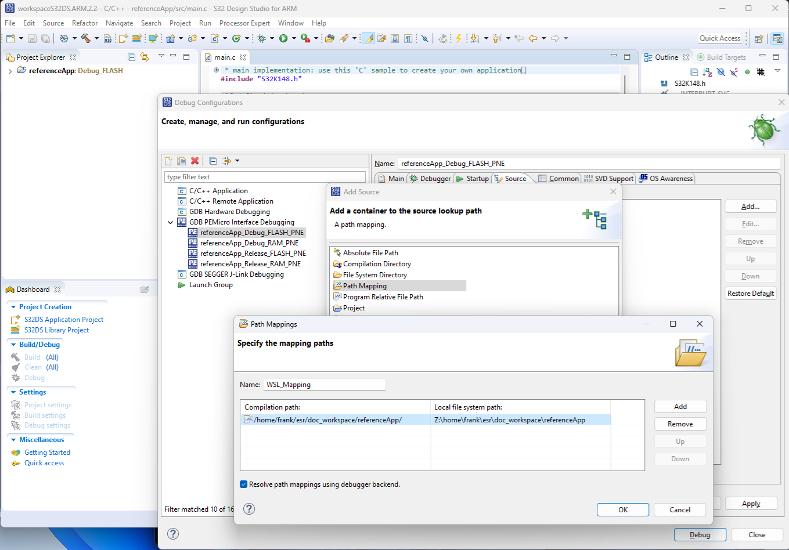

Flash, debug and test serial console on Windows
NXP’s S32 Design Studio for ARM can be used to flash and debug your image while it is running on the S32K148 development board.
While the Ubuntu filesystem appears in Windows Explorer at \\wsl.localhost\Ubuntu- 22.04,
in order for the Windows version of NXP’s IDE to access the build files,
it is necessary to map a network drive to \\wsl$\Ubuntu-22.04,
like this…
{kind=link}
Install S32 Design Studio for ARM
To download and install this you will first need to register for a free account with NXP. Note that free activation codes for software you download will be sent to the email account you register with. Once registered, you can download S32 Design Studio for ARM from here.
Download and run the installer S32DS_ARM_Win32_v 2.2 .exe (this assumes you have administrator rights on your PC).
Enter the activation code received by email when prompted and chose Activate Online.
During the installation it will also prompt you to allow drivers from PEMicro to be installed - accept this.
Once complete, from Windows Start run S32 Design Studio for ARM 2.2.
An S32DS Extensions and Updates window should appear indicating if there are updates available - if so, install these.
Flash and debug in S32 Design Studio for ARM
Assuming you have a S32K148 development board and it is connected to your PC via USB, then you can flash your image on the board and debug over USB. You can create a dummy project in S32 Design Studio for ARM in the default workspace and then change it to point to the external code and the image created as described in Set up build for S32K148 platform on Windows.
In S32 Design Studio choose File -> New -> S32DS Application Project, select the processor Family S32K1xx -> S32K148 and give the project a name. eg. “referenceApp“. You can leave all other settings at their default values.
In Run -> Debug Configurations find GDB PEMicro Interface Debugging-> referenceApp_Debug_FLASH_PNE. In the Main tab set the C/C++ Application to the .elf file that was built by cmake. Enter the absolute path to the .elf file…
[absolute_path_to_project_root]\build\s32k148-gcc\executables\referenceApp\application\RelWithDebInfo\app.referenceApp.elf
This assumes you have already built the image for the S32K148 platform in WSL and have mapped the Ubuntu filesystem to the Z: drive, as described in Set up build for S32K148 platform on Windows. In the above picture, \\wsl$\Ubuntu-
22.04is mapped to the Z: drive.In the Debugger tab, in the Interface: field select
OpenSDA Embedded Debug - USB Port. The Port: field should then be populated with an instance representing the target board connected to your PC via USB. If nothing appears in the Port: field you can try pressing Refresh or power cycling your target board. If the target board is not found then you cannot continue until this is resolved.In the Source tab select Add… -> Path Mapping. In the Path Mappings window select Add. For Compilation path: enter the base directory of the source code as seen in Ubuntu, for Local file system path enter the same location but as seen in Windows through the mapped network drive, and press OK.
In the above picture, \\wsl$\Ubuntu-
22.04is mapped to the Z: drive and the code has been built in Ubuntu in the directory specified by Compilation path.If the above steps are successful then press the Debug button, this flashes app.referenceApp.elf to the target board and starts the debugger, it halts at the entry point in main(). At this point you can single-step through the code, or press the Resume button to run the software. Once flashed you can power-cycle the target board without the USB connection and it will run the software.
{kind=link}
{kind=link}
{kind=link}
{kind=link}
Test the Serial Console
The application running on the board uses the serial port for logging messages and to implement a command console,
which can be interacted with in parallel to debugging over the same USB cable.
This will appear as a COM port in Windows. eg. COM4 - (OpenSDA).
In order to test this you need serial port terminal software to connect to the COM port.
TeraTerm is one example of such software - you can download the latest TeraTerm release from here.
If you are using TeraTerm, in File -> New Connection choose Serial, select the port with OpenSDA in its title
(if not found then you don’t have a working target board successfully connected to your PC via USB)
and select OK.
In Setup -> Serial Port set the parameters as shown below.
Speed |
Data |
Parity |
Stop bits |
Flow control |
|---|---|---|---|---|
115200 |
8 bit |
None |
1 |
None |
If the target board is powered and the software you built and flashed on the board is running then you should see output from it printed to the console,
and if you type help you should see the commands available printed out, like this…
14: RefApp: LIFECYCLE: INFO: Run level 8 14: RefApp: LIFECYCLE: INFO: Run sysadmin 14: RefApp: LIFECYCLE: DEBUG: Run sysadmin done 15: RefApp: LIFECYCLE: DEBUG: Run level 8 done 1022: RefApp: DEMO: DEBUG: Sending frame 0 2022: RefApp: DEMO: DEBUG: Sending frame 1 3022: RefApp: DEMO: DEBUG: Sending frame 2 4022: RefApp: DEMO: DEBUG: Sending frame 3 help adc - Adc Console all - Print All Adc get - startChannel ChannelNr [stopChannel ChannelNr] allx - all scaled adc help - Show all commands or specific help for a command given as parameter. lc - lifecycle command reboot - reboot the system poweroff - poweroff the system udef - forces an undefined instruction exception pabt - forces a prefetch abort exception dabt - forces a data abort exception assert - forces an assert pwm - Set PWM all - print all channel numbers and names set - channel[0-9,0xFF=all] duty[0=off|10000=100%] setPeriod - channel[0-9] period[microsec] stats - lifecycle statistics command cpu - prints CPU statistics stack - prints stack statistics all - prints all statistics ok > 4339: RefApp: CONSOLE: INFO: Received console command "help" 4436: RefApp: CONSOLE: INFO: Console command succeeded 5022: RefApp: DEMO: DEBUG: Sending frame 4 6022: RefApp: DEMO: DEBUG: Sending frame 5
At this point, you can build the code, flash it on the board and debug it. You can now explore the code, make your own changes and learn how it works.